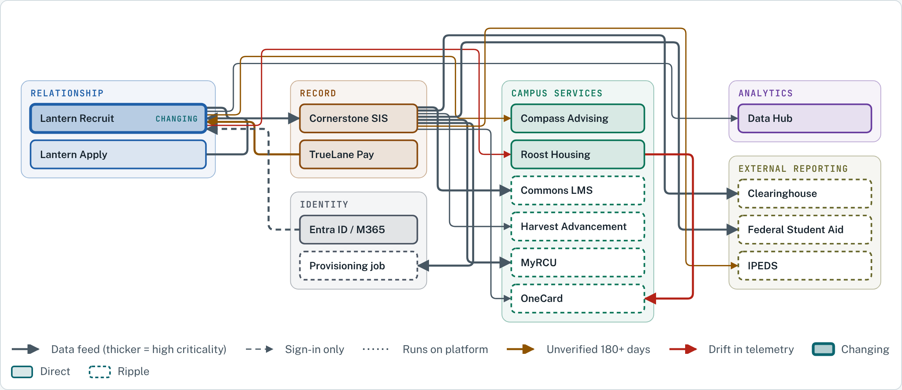
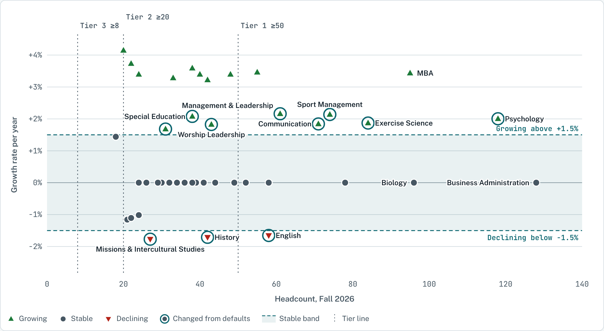
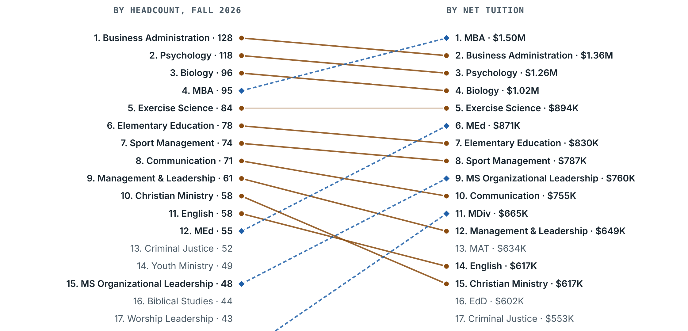
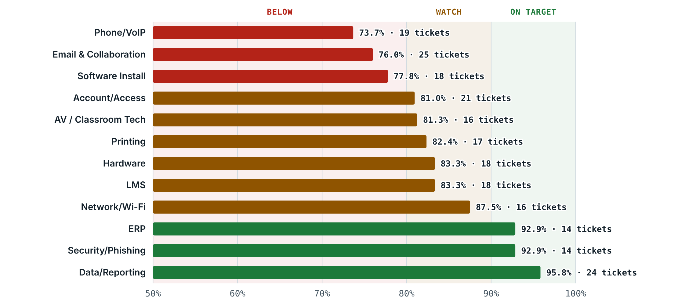
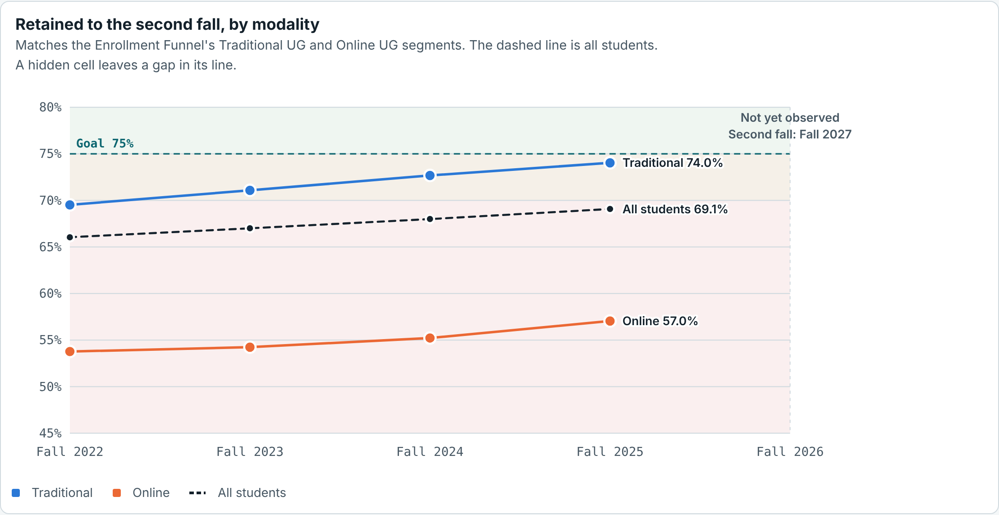
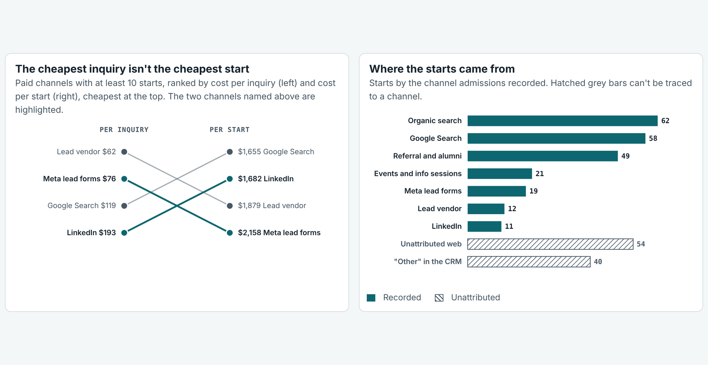
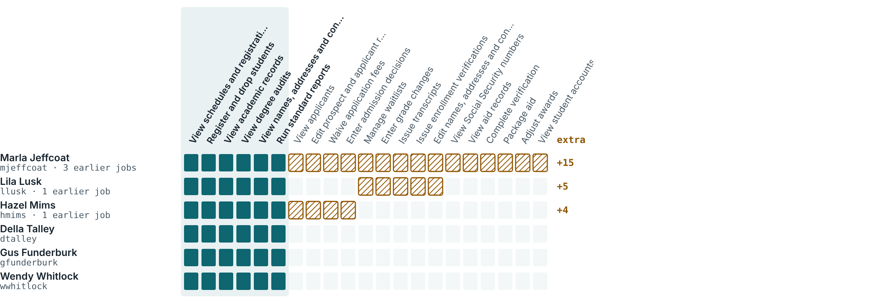

Cookbook Demos
Interactive demos from the Test Kitchen of The Higher Ed AI Cookbook. Every demo uses Riverside Christian University, a fictional institution.
Test KitchenRCU Systems Atlas

One source file of systems and interfaces, rendered on demand as an impact radius, a system-of-record map, and a drift report.
Test KitchenRCU Portfolio Explorer

Five years of program enrollment in one source file. Move the recipe's thresholds and watch programs reclassify, then see which schools the growth came from.
Test KitchenRCU Program Economics

Program enrollment, tuition and aid, and the section schedule joined in one source file. See which programs bring in the revenue and which carry the teaching, with the allocation rules out in the open.
Test KitchenRCU IT Service Health

Six months of help-desk tickets against their service-level targets. Switch off each pre-flight check to see how much the answer depends on cleaning the export first.
Test KitchenRCU Retention Risk

Four entry cohorts against a retention goal, split by student group and traced to gateway courses. Group totals only: watch the page hide groups too small to report.
Test KitchenRCU Source-to-Start Reconciliation

One recruiting cycle priced per start, not per inquiry, and a month-by-month audit of the tracking in between. Share out the starts that lost their source, and watch the page label every estimate.
Test KitchenRCU Access Review

Staff access in the student information system, set against the HR record. Propose a role for each job from what its people actually hold, then list everything left over, from access kept after a job change to a login nobody owns.